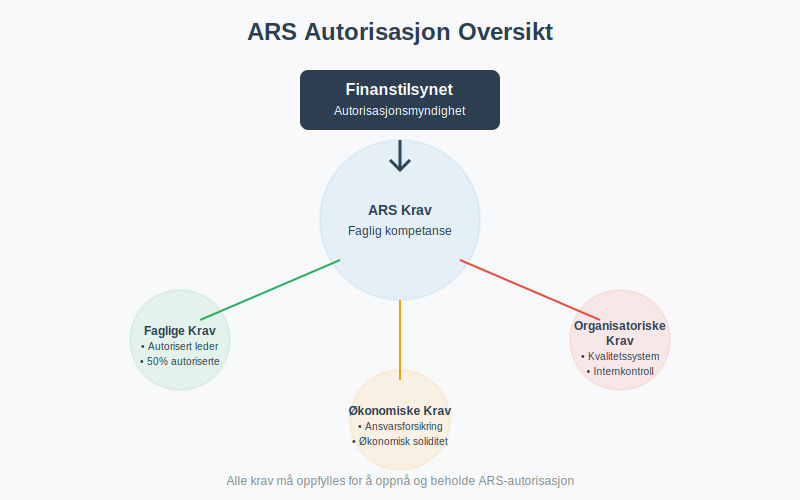
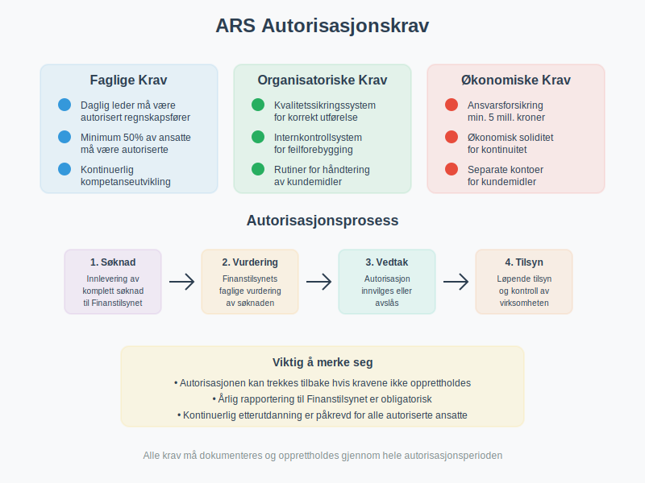
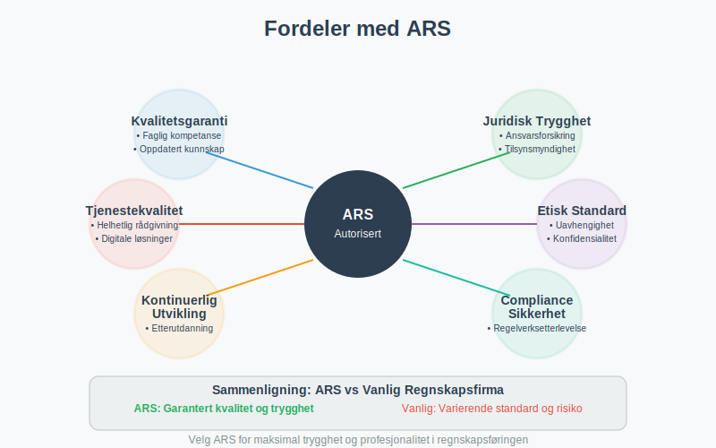
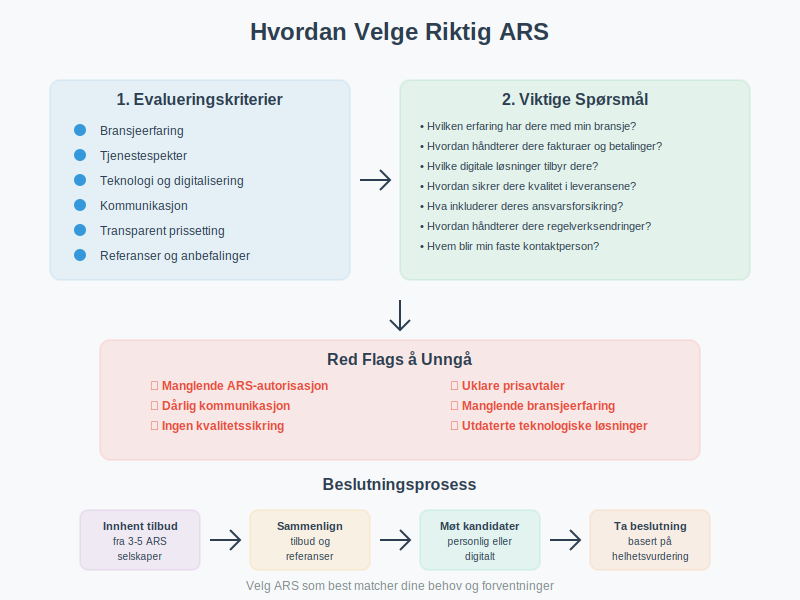
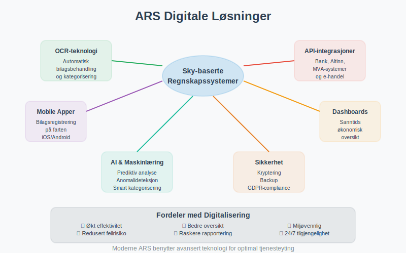
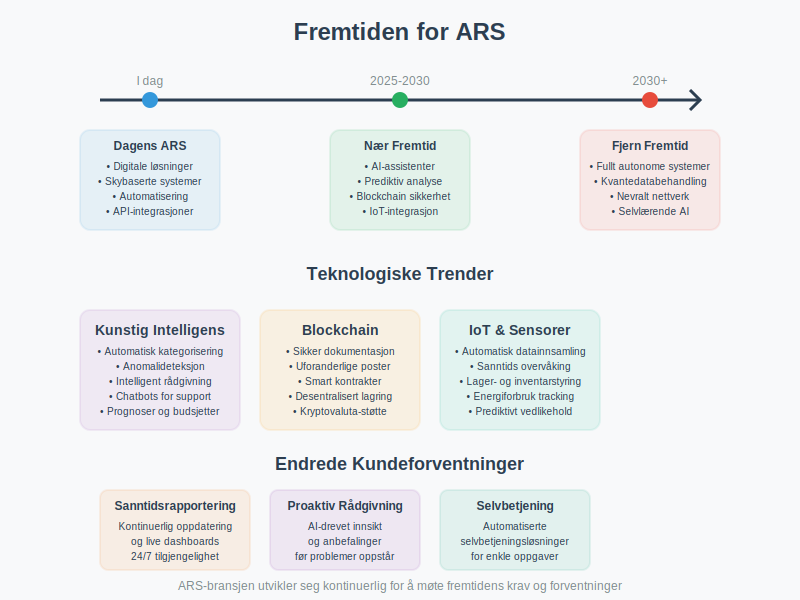

Et ARS (Autorisert Regnskapsførerselskap) er et regnskapsfirma som har fått offisiell autorisasjon fra Finanstilsynet til å utføre regnskapsførertjenester i Norge. Autorisasjonen sikrer at selskapet oppfyller strenge krav til kompetanse, kvalitet og etikk, og gir bedrifter trygghet for at deres regnskap håndteres av kvalifiserte fagpersoner.
Hva betyr ARS-autorisasjon?
ARS-autorisasjonen er en kvalitetssikring som viser at regnskapsfirmaet oppfyller Finanstilsynets krav til faglig kompetanse, organisering og kvalitetssikring. Dette gir bedrifter en garanti for at deres regnskapsførsel utføres i henhold til gjeldende lover og forskrifter.

Forskjellen mellom ARS og vanlige regnskapsfirmaer
| Aspekt | ARS (Autorisert) | Vanlig regnskapsfirma |
|---|---|---|
| Autorisasjon | Godkjent av Finanstilsynet | Ingen offisiell godkjenning |
| Kompetansekrav | Dokumentert fagkompetanse | Varierende kompetanse |
| Kvalitetssikring | Obligatorisk kvalitetssystem | Frivillig |
| Tilsyn | Underlagt Finanstilsynets kontroll | Ingen ekstern kontroll |
| Ansvarsforsikring | Obligatorisk | Frivillig |
| Etiske retningslinjer | Må følge strenge etiske krav | Varierende standarder |
Krav for ARS-autorisasjon
For å oppnå ARS-autorisasjon må regnskapsfirmaet oppfylle en rekke strenge krav som sikrer høy kvalitet på tjenestene.

Faglige krav
- Daglig leder må være autorisert regnskapsfører eller statsautorisert revisor
- Minimum 50% av de ansatte som utfører regnskapsførertjenester må være autoriserte regnskapsførere
- Kontinuerlig kompetanseutvikling gjennom obligatorisk etterutdanning
- Dokumentert erfaring innen regnskapsføring og relaterte områder
Organisatoriske krav
- Kvalitetssikringssystem som sikrer korrekt utførelse av oppdrag
- Internkontrollsystem for å forebygge feil og mangler
- Rutiner for håndtering av kundemidler og sensitive opplysninger
- Forsvarlig organisering av virksomheten
Økonomiske krav
- Ansvarsforsikring på minimum 5 millioner kroner per skadetilfelle
- Økonomisk soliditet som sikrer kontinuitet i tjenesteyting
- Separate kontoer for kundemidler
Fordeler ved å velge et ARS
Å velge et autorisert regnskapsførerselskap gir flere konkrete fordeler for din bedrift.

Kvalitetsgaranti
- Faglig kompetanse: Garantert høy faglig standard
- Oppdatert kunnskap: Kontinuerlig oppdatering på regelverksendringer
- Kvalitetssikring: Systematisk kontroll av alle leveranser
- Etisk standard: Høye etiske krav til alle ansatte
Juridisk trygghet
- Ansvarsforsikring: Økonomisk beskyttelse ved feil
- Tilsynsmyndighet: Finanstilsynet fører kontroll
- Klageadgang: Mulighet for klage til Finanstilsynet
- Lovpålagt taushetsplikt: Streng beskyttelse av sensitive opplysninger
Tjenestekvalitet
- Helhetlig rådgivning: Kompetanse innen aksjeselskap, MVA og skatterett
- Digitale løsninger: Moderne verktøy og systemer
- Proaktiv rådgivning: Forebyggende råd og veiledning
- Tilgjengelighet: Dedikerte kontaktpersoner
ARS sine ansvarsområder
Et autorisert regnskapsførerselskap har omfattende ansvar overfor sine klienter og samfunnet.
Faglig ansvar
- Korrekt regnskapsføring i henhold til regnskapsloven
- Riktig MVA-behandling og innrapportering
- Korrekt lønnsbehandling og a-melding
- Årsregnskapsutarbeidelse og rapportering til offentlige myndigheter
Rådgivningsansvar
- Proaktiv rådgivning om skatteoptimalisering
- Veiledning ved etablering av aksjeselskap
- Støtte ved fusjon, fisjon og andre omorganiseringer
- Hjelp med finansiering og aksjekapital
Etisk ansvar
- Uavhengighet i rådgivning og tjenesteyting
- Konfidensialitet i håndtering av klientopplysninger
- Integritet i alle forretningsforhold
- Objektivitet i faglige vurderinger
Hvordan velge riktig ARS
Valg av regnskapsførerselskap er en viktig beslutning som påvirker din bedrifts økonomi og compliance.

Evalueringskriterier
| Kriterium | Hva du bør vurdere |
|---|---|
| Bransjeerfaring | Erfaring med din type virksomhet |
| Tjenestespekter | Dekker alle dine behov |
| Teknologi | Moderne digitale løsninger |
| Kommunikasjon | Tilgjengelighet og responstid |
| Pris | Transparent og konkurransedyktig prissetting |
| Referanser | Anbefalinger fra andre klienter |
Spørsmål å stille
- Hvilken erfaring har dere med min bransje?
- Hvordan håndterer dere fakturaer og betalinger?
- Hvilke digitale løsninger tilbyr dere?
- Hvordan sikrer dere kvalitet i leveransene?
- Hva inkluderer deres ansvarsforsikring?
- Hvordan håndterer dere endringer i regelverk?
Red flags å unngå
- Manglende ARS-autorisasjon
- Uklare prisavtaler
- Dårlig kommunikasjon
- Manglende bransjeerfaring
- Ingen kvalitetssikringssystem
- Utdaterte teknologiske løsninger
ARS og digitalisering
Moderne ARS-selskaper benytter avanserte digitale løsninger for å effektivisere regnskapsføringen og gi bedre service til sine klienter.

Teknologiske løsninger
- Skybaserte regnskapssystemer for sanntidsrapportering
- Automatisk bilagsbehandling med OCR-teknologi
- Integrerte løsninger med bank og Altinn
- Mobile apper for enkel bilagsregistrering
- Dashboards for økonomisk oversikt
- ERP-systemer for helhetlig forretningsintegrasjon
Fordeler med digitalisering
- Økt effektivitet i regnskapsføringen
- Redusert feilrisiko gjennom automatisering
- Bedre oversikt over økonomien
- Raskere rapportering til myndigheter
- Miljøvennlig med mindre papirbruk
Kostnader ved ARS-tjenester
Kostnadene for ARS-tjenester varierer basert på bedriftens størrelse, kompleksitet og tjenestebehov.
Typiske prismodeller
| Prismodell | Beskrivelse | Egnet for |
|---|---|---|
| Fast månedspris | Forutsigbar kostnad | Stabile virksomheter |
| Timepris | Betaling per arbeidet time | Varierende behov |
| Transaksjonspris | Pris per bilag/transaksjon | Høyt transaksjonsvolum |
| Pakkeløsninger | Kombinerte tjenester | Helhetlige behov |
Faktorer som påvirker prisen
- Bedriftsstørrelse og omsetning
- Antall transaksjoner per måned
- Kompleksitet i regnskapet
- Tilleggstjenester som lønnskjøring og rådgivning
- Digitalisering av prosesser
- Bransje og spesielle krav
Fremtiden for ARS
ARS-bransjen er i kontinuerlig utvikling, drevet av teknologiske fremskritt og endrede kundebehov.

Teknologiske trender
- Kunstig intelligens for automatisert kategorisering
- Maskinlæring for anomalideteksjon
- Blockchain for sikker dokumentasjon
- API-integrasjoner med flere systemer
- Prediktiv analyse for bedre prognoser
Endrede kundeforventninger
- Sanntidsrapportering og kontinuerlig oppdatering
- Proaktiv rådgivning basert på data
- Selvbetjeningsløsninger for enkle oppgaver
- Mobiloptimaliserte løsninger
- Bærekraftige og miljøvennlige prosesser
Konklusjon
Et ARS (Autorisert Regnskapsførerselskap) representerer den høyeste standarden innen regnskapsførertjenester i Norge. Gjennom strenge autorisasjonskrav sikrer Finanstilsynet at disse selskapene leverer tjenester av høy kvalitet, med nødvendig fagkompetanse og etisk standard.
For bedrifter som ønsker trygghet, kvalitet og profesjonell håndtering av sitt regnskap, er valg av et ARS en investering i langsiktig økonomisk helse og compliance. Den ekstra kostnaden oppveies ofte av redusert risiko, bedre rådgivning og økt effektivitet i regnskapsføringen.
Ved valg av ARS bør du vurdere selskapets bransjeerfaring, teknologiske løsninger, kommunikasjon og prismodell for å finne den beste partneren for din virksomhets behov.